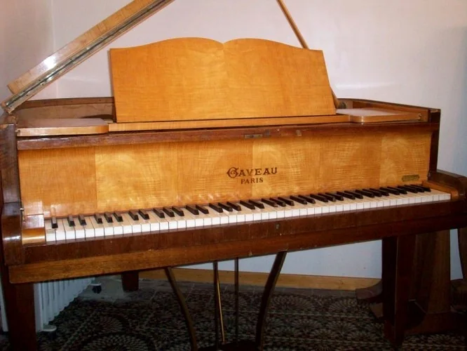
Quart de queue1952
Gaveau quart de queue
- Origine
- France
- Longueur
- 133 cm
Pianos neufs et d'occasion, accord, réparation et restauration. Spécialiste des pianos acoustiques depuis plus de 25 ans, AG Music Piano vous reçoit au magasin de Binche, sur rendez-vous.
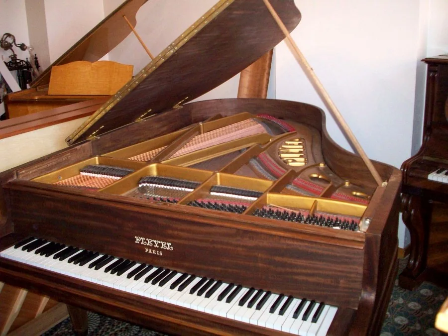
Pianos neufs et d'occasion, et toutes les grandes marques de pianos anciens : Pleyel, Gaveau, Erard… Chaque piano d'occasion est choisi avec soin par notre technicien et entièrement révisé (réglages, accordage) : vous pouvez jouer dès qu'il arrive chez vous.

Quart de queue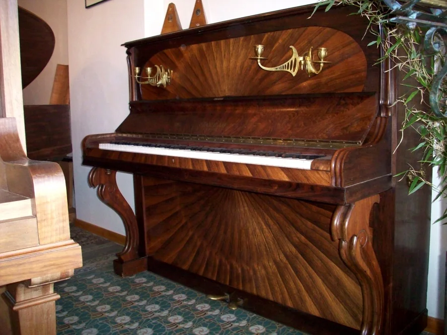
Piano droit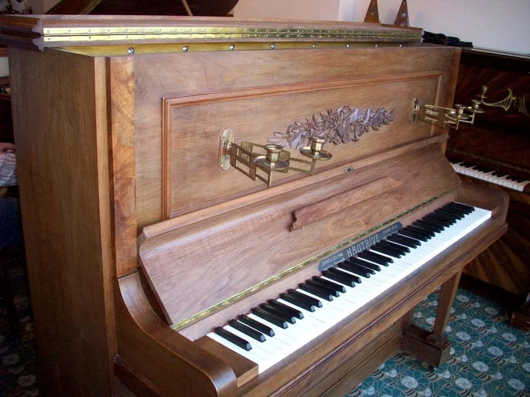
Piano droit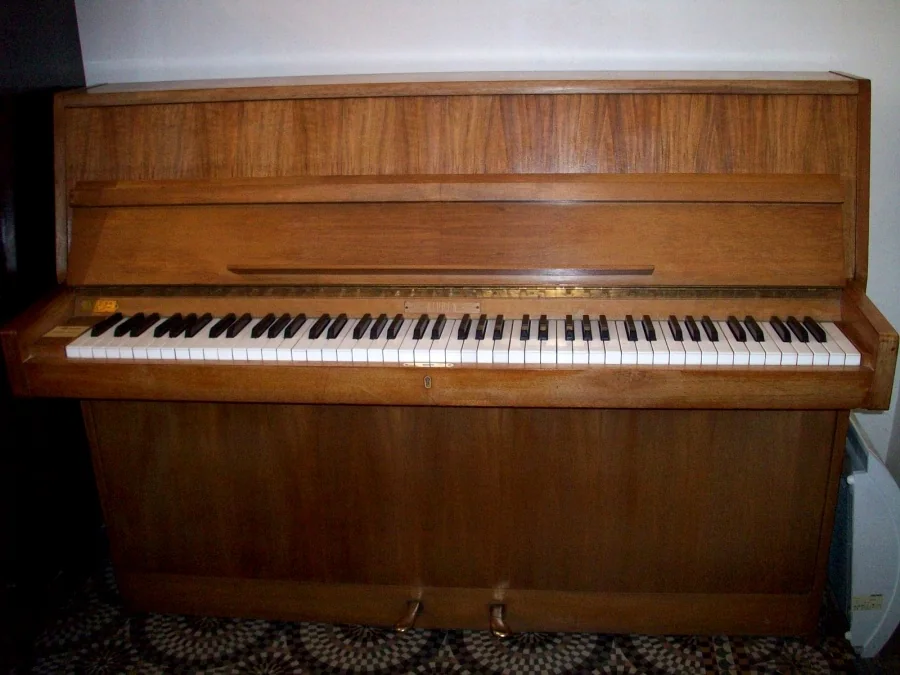
Piano droit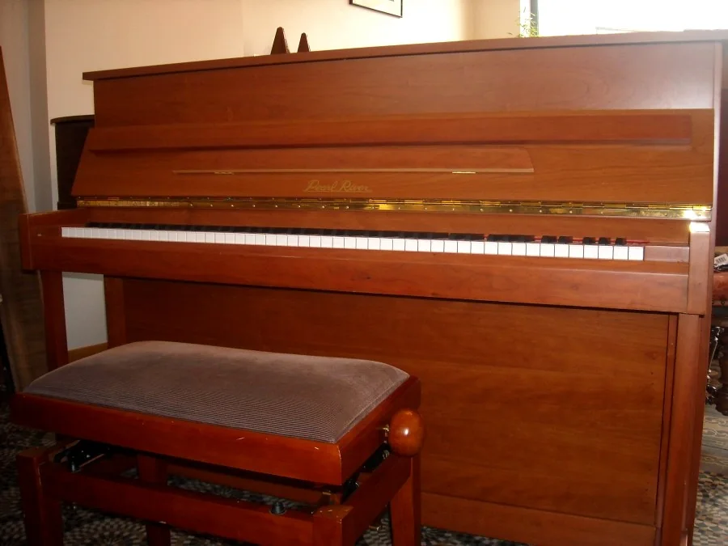
Piano droitFaites glisser pour voir les six pianos
Pleyel, Gaveau, Erard…
Photos à titre d'exemple : l'offre change chaque mois. Venez essayer les pianos du moment, avec les conseils d'un spécialiste, que vous soyez débutant ou confirmé.
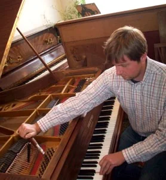
L'humidité de la pièce, la température, l'usure normale : avec le temps, les cordes se détendent et la tonalité du piano devient médiocre, voire complètement fausse. L'accord doit se faire régulièrement. Frédéric Procureur, accordeur du Conservatoire royal de Mons pendant plus de 15 ans, s'en charge.
Votre piano est endommagé ? Vous le pensez cassé ? Vous souhaitez simplement l'entretenir ? Qu'il s'agisse d'un piano droit ou à queue, il y a souvent une solution.
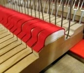
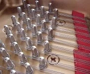
Marteaux, feutres, chevilles : le travail se fait pièce par pièce.
Un service gratuit et exclusif d'AG Music Piano.
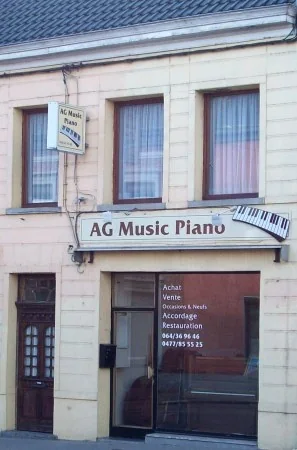
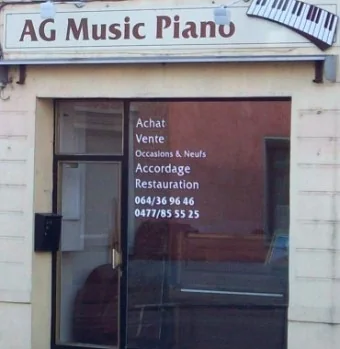
Parce que chaque pianiste, débutant ou confirmé, doit pouvoir acquérir un piano neuf ou d'occasion de qualité, avec les meilleurs services. Le magasin ouvre uniquement sur rendez-vous : vous essayez les pianos au calme, avec les conseils d'un expert.
* La livraison des pianos neufs est gratuite. Pour les pianos d'occasion, une partie des frais de transport peut rester à votre charge si la livraison a lieu à plus de 50 km de Binche.
Avis laissés sur la fiche Google du magasin, cités mot pour mot.
Essai en magasin, accord, réparation : choisissez le motif et le jour qui vous arrange. Frédéric Procureur vous rappelle pour fixer l'heure exacte.